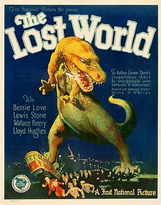
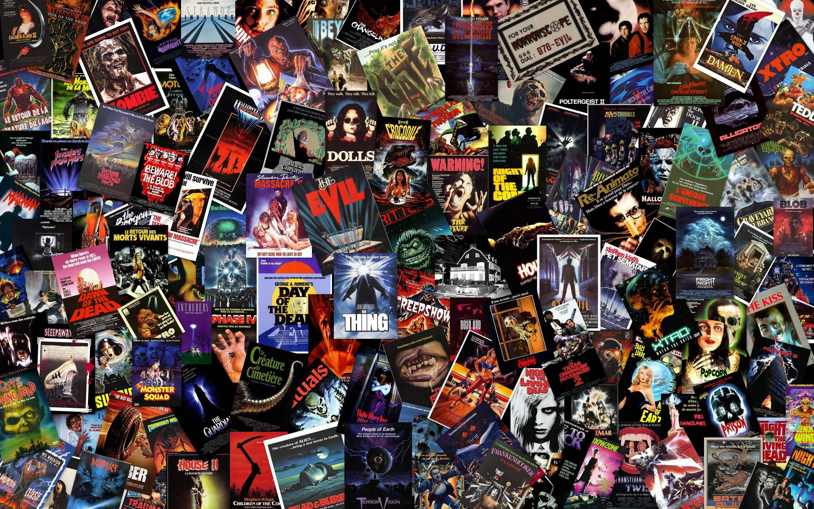
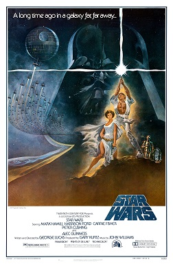
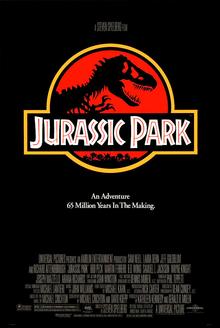

Special Effects in Movies
Movies have continually used special effects to create illusions and enhance storytelling and they have evolved significantly over time. From the early days of cinema filmmakers have experimented with different strategies to make their visions come to life on the screen. Special effects have been used in movies for over a century and they have evolved significantly over time. Early special effects have been often practical meaning that they were created using physical objects and techniques. Today digital special effects are the norm in movies. They are used to create everything from realistic explosions to fantastical creatures.
Here are 5 subtopics about special effects in movies:
What are Special Effects in movies
Special effects are techniques and technologies that create illusions or enhance visual elements in a movie. Otherwise noted as SFX, these effects can be either practical or digital, and are used to add visual interest, realism, or fantasy to a film. Practical special effects involve physical objects and techniques that are captured on camera during filming. Examples of practical effects include makeup, prosthetics, animatronics, miniatures, pyrotechnics, and more. These techniques have been used in filmmaking since its early days to create illusions such as disappearing acts, explosions, or transforming characters.
What are special effects in movies used for?
- Enhancing the appearance of characters and objects
- Creating realistic or fantastical environments
- Making impossible stunts possible
- Depicting otherworldly creatures and beings
The history of Special Effects in Movies
The history of special effects in movies can be traced back to the early days of film industry. Filmmakers began experimenting with various techniques to create illusions on screen. One of the earliest examples of practical effects and trick photography can be seen in silent films. These relied heavily on visual storytelling due to the lack of synchronized sound.
Examples of Special Effects in Early Movies
- 1) The Lost World (1925)
-
One of the earliest examples of special effects in movies is the 1925 silent film The Lost World. The movie is based totally on a unique by way of Arthur Conan Doyle and it tells the tale of a group of explorers who discover a prehistoric world in South America. The film features stop motion animation by Willis O'Brien who would later go on to create the special effects for the 1933 film King Kong.
- 2) Star Wars (1977)
-
The 1977 film Star Wars is one of the most influential movies in the history of special effects. That film featured groundbreaking SFX that set a new standard for sci-fi filmmaking. In our breakdown of how they shot Star Wars, we learn just how complicated it was to create elements like the aerial space battles. The film's use of miniatures, matte paintings, and practical effects combined with innovative motion control cameras paved the way for future advancements in visual effects.
- 3) Jurassic Park (1993)
-
The 1993 film Jurassic Park is another landmark film in the history of special effects. The film was directed by Steven Spielberg and it featured groundbreaking visual effects by Industrial Light & Magic. The film featured a combination of practical and digital effects to create the illusion of living dinosaurs. The film also featured the first use of the Dinosaur Input Device (DID) which was used to control the movements of the dinosaurs.
- 4) The Matrix (1999)
-
The 1999 film The Matrix is another landmark film in the history of special effects. The most jaw-dropping visual effect in the Wachowski's sci-fi trilogy The Matrix was 'bullet time' which showed the action in a scene slowing down while the camera moved at normal speed. Though it appeared to be a digital effect, bullet time uses one of the oldest special effects in film history: time-slice photography. This technique involves using a bank of cameras to take a single still picture, which editors assemble to create "virtual camera movement".



The different types of Special Effects in Movies
Special effects are techniques used in movies to create scenes that are impossible, impractical or too expensive to film in reality. They can be divided into two main categories practical effects and digital effects.
- 1) Practical Effects
-
Practical effects involve creating physical illusions on set using props, makeup, animatronics, prosthetics, miniatures, pyrotechnics, etc. These effects are often used to create a sense of realism or tangibility in a scene, and can be particularly effective for portraying physical objects such as explosions, creatures, or vehicles. Practical effects can also help actors get into character by providing them with tangible objects to interact with on set. One of the biggest proponents of the use of practical effects is director Christopher Nolan. In Nolan’s best films from Inception to Dunkirk, Nolan opts for practical effects whenever possible. These range from iconic stunts, miniature models, and in the case of Inception — moving sets.
- 2) Digital Effects
-
Visual effects, often abbreviated as VFX, are a type of digital effect used in films and other media to create or enhance imagery that cannot be achieved through practical means. These effects can range from simple compositing of different elements to create a seamless shot, to complex simulations of physics, weather, or other natural phenomena. Visual effects can also be used to create fantastical creatures, environments, or events that would be impossible to film in real life. Let’s take a look at another scene from Inception where Nolan actually opted to use VFX.
The role of Special Effects in Movies
Special effects have the power to enhance a film's narrative and emotional impact by creating a more immersive and engaging experience for audiences. When used effectively, SFX can help to bring a filmmaker's vision to life on screen, allowing viewers to connect with characters and storylines in new and exciting ways. One way that SFX can enhance a film's narrative is by creating a sense of realism or otherworldliness that draws viewers into the story. SFX can also be used to heighten emotional impact by adding visual cues that reinforce key themes or ideas within the story. Another way that SFX can enhance a film's emotional impact is through their ability to create spectacle and awe-inspiring visuals.
The future of Special Effects in Movies
As technology continues to advance at a rapid pace, the future of SFX in film is looking more exciting than ever. With these technological advancements, filmmakers are exploring new ways to create immersive and emotionally impactful visual experiences for audiences. One major innovation is the use of virtual reality and augmented reality to create immersive experiences that blur the lines between the real and digital worlds. Motion capture technology has also advanced significantly in recent years, allowing filmmakers to capture more detailed performances from actors that can then be translated into stunning effects on screen.